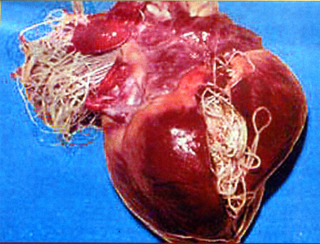
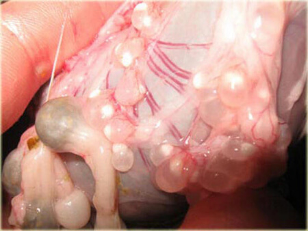

¡Las estadísticas de la tasa de infestación por parásitos son alarmantes! El 95 % de las personas portan parásitos mortales que causan numerosas enfermedades y muertes a través de su actividad en el cuerpo humano. Hablamos sobre el nivel de amenaza que suponen los parásitos y los métodos que existen para combatir este problema con el famoso Parasitólogo Dr. Esteban del Álamo, titulado en Parasitología por el Laboratorio de Parasitología
Hola, Esteban. La primera pregunta que me gustaría hacerle está relacionada con las estadísticas mencionadas anteriormente. ¿Son correctas?
Lamentablemente, debo afirmar que los datos son correctos. Puede que haya ciertas inexactitudes, pero están dentro del margen del error de muestreo. Aproximadamente el 90-95 % de la población de Columbia está infestada con parásitos. Lo cierto es que es una cifra muy desalentadora, sobre todo teniendo en cuenta que muchas personas mueren por ello. Nueve de cada diez personas están infestadas con parásitos y nadie aborda este problema sistemáticamente.
Espere. ¿Ha dicho "morir"? ¿Quiere decir eso que los parásitos son capaces de matar a un ser humano?
Por supuesto, sí pueden. En primer lugar, los parásitos pueden causar la muerte por sí mismos. Dime, ¿con qué frecuencia se les hace una autopsia a los muertos? Por regla general, se hace solo en los casos en los que se sospecha que la muerte fue causada por violencia. Cualquier especialista forense le diría que 9 de cada 10 cuerpos sometidos a examen post mortem están llenos de parásitos. Estadísticamente, en el 80 % de las muertes, los parásitos son la causa.
Además, pueden incluso destruir un cuerpo que parece joven y saludable. Yo diría que las muertes causadas por parásitos representan el 85 % de todas las muertes inesperadas o llamadas "súbitas". Mire estas fotos realizadas en nuestro laboratorio:
Hay parásitos dentro del corazón de una mujer de 45 años. La presencia de parásitos no se descubrió hasta después de su muerte:
Los parásitos en el corazón de la mujer de 45 años de edad que fueron encontrado después de su muerte:

Un páncreas paralizado por parásitos (fue extirpado completamente durante la cirugía):
Cysticercus (tipo de parásito) en el cerebro humano (descubierto durante el transcurso de la cirugía, el paciente falleció):

Incluso en casos en que los parásitos no suponen una amenaza directa para la vida humana, agotan el organismo y debilitan su resistencia a los virus y las bacterias. Viven dentro del ser humano alimentándose de su sangre, fluidos de los tejidos y la carne. Los parásitos defecan dentro del ser humano y se multiplican colocando sus gusanos dentro del cuerpo. ¿Quién sabe cuándo se cruzará la línea roja y se iniciará una multiplicación incontrolada de parásitos que origine la creación de colonias de parásitos en los órganos? Los parásitos pueden pasar desapercibidos durante un período de tiempo determinado y después matarte en el transcurso de literalmente 2 semanas. Ni siquiera te daría tiempo a darte cuenta de lo que está ocurriendo. Por ejemplo, puedes vivir una vida normal durante muchos años con una pequeña cantidad de parásitos en el hígado. Pero si se produce un auge de multiplicación, te ingresarán en la UCI en 2-3 meses, ya que quedará muy poco de su hígado. Todo tu cuerpo sufrirá daños irremediables.
Creo que nuestros lectores estarían interesados en saber cómo deshacerse de los parásitos.
Es importante saber que detectar la presencia de parásitos es un proceso difícil. Es fácil si se trata de algo fácilmente detectable, como los gusanos. Pero hay cientos de tipos de parásitos que habitan en el corazón, el cerebro, el hígado y los vasos sanguíneos. Teniendo en cuenta que el equipo técnico de nuestras clínicas no siempre es perfecto, estos parásitos parecen ser indetectables. Es un problema muy serio, porque no se consigue diagnosticar a los pacientes.
Además, el tratamiento químico de los parásitos no es barato. El costo promedio del procedimiento es de alrededor de 45 €, el cual puede ser un precio prohibitivo para algunas personas.
Lo que sí puedo recomendar a sus lectores sin duda es , un suplemento antiparasitario especial. Hace aproximadamente un año, comenzamos una prueba independiente de este producto en nuestro laboratorio. En base de los resultados de las pruebas, podemos decir que el suplemento ayuda a todos los pacientes. En el 89 % de los casos, destruye completamente los parásitos y en el 11 % de los casos reduce su actividad y debilita la capacidad de multiplicación. A la larga, el suplemento limpia por completo el cuerpo de parásitos. Después de que los parásitos se han eliminado, el suplemento se puede seguir utilizando para prevenir futuras infestaciones que podrían producirse en cualquier momento.
Habla como si estuviera 100 % seguro de la eficacia de este producto.
Es verdad. En primer lugar, se trata de un producto oficial que fue patentado y testado. En segundo lugar, lo hemos utilizado con nuestros pacientes, ya que teníamos cierto escepticismo en relación a las estadísticas oficiales. El suplemento antiparasitario contiene componentes de hierbas naturales que matan a los parásitos. Además, activa el sistema inmunológico ayudando al cuerpo a combatir las consecuencias de la actividad parasitaria.
Ha demostrado ser un remedio antiparasitario uniforme, que es muy importante cuando no existe un diagnóstico. Después de darnos cuenta de lo efectivo que era este suplemento, nuestro laboratorio facilitó la ayuda financiera del Departamento de Salud al fabricante, lo cual ayudó a aumentar la producción. Después de que aumentara la producción, ya se podía comprar el suplemento por Internet. Cualquiera persona puede realizar un pedido fácilmente y comprar este producto para uso persona. El envío se hace por correos o por empresa de mensajería. El precio del suplemento antiparasitario es 20-30 veces más bajo que un curso de tratamiento en cualquier clínica especializada.
contiene una combinación
exclusiva de Moringa, Cúrcuma y Azufre purificado.
Administración: 1 cápsula 2 veces/día, antes de las comidas.
¿Hay restricciones asociadas con el consumo del suplemento?
No es un fármaco químico, por lo que no tiene contraindicaciones. Durante los ensayos que llevamos a cabo, el suplemento fue administrado a 3254 pacientes y ninguno de ellos sufrió ningún tipo de reacción alérgica al contenido del suplemento. no provoca daños al ser humano y efectivamente elimina la mayoría de los tipos de parásitos del interior del organismo, incluyendo varios tipos de gusanos, hongos, organismos unicelulares y otros tipos de parásitos humanos más peligrosos. También quiero mencionar que el suplemento puede ser utilizado por niños. Los niños, debido a que tienen un sistema inmunológico débil, son un blanco fácil para los parásitos. Los niños pueden infestarse al comerse una manzana sucia o acariciar a un gato. Casi la mitad de las muertes en niños menores de 14 años son provocadas por los parásitos.
Esteban, muchas gracias por la entrevista. ¿Quiere decir algo más a nuestros lectores antes de despedirse?
Comiencen a preocuparse por su cuerpo, ya que nadie lo hará por ustedes. En este momento, mientras está leyendo este artículo, hay parásitos moviéndose a sus anchas por su hígado, corazón, vasos sanguíneos e incluso por los pulmones.
Si no se deshace de ellos, en el mejor de los casos perderá 11-20 años de su vida debido a las pérdidas sufridas por su cuerpo. En el peor de los casos, esto podría resultar en muerte prematura o una enfermedad grave. Empiece a prevenir que eso ocurra y tome los suplementos antiparasitarios especiales . Así reducirá significativamente los riesgos.
P.D.: Le hemos pedido al Dr. Esteban del Álamo que nos haga un favor y los lectores de nuestro sitio web tienen la oportunidad de pedir el suplemento antiparasitario a mitad de precio.
Esta información ha sido recopilada por Manuel Olmedo